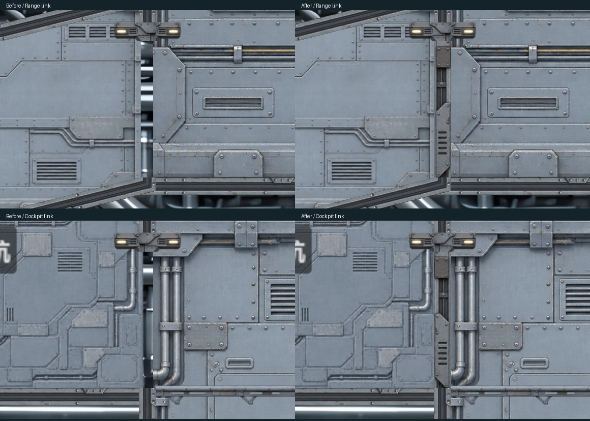

离线单人动作游戏
Development journal
开发日志
从基地的一道门缝，到战斗中的一次回退。
沿着日期和开发方向，回看《回曜》的制作过程。

制作手记 / 2026.11.14
基地门框的竖缝
工坊里的门身图是完整的，为什么两间房一连通，门框就露出了底色？

离线单人动作游戏
从基地的一道门缝，到战斗中的一次回退。
沿着日期和开发方向，回看《回曜》的制作过程。

工坊里的门身图是完整的，为什么两间房一连通，门框就露出了底色？